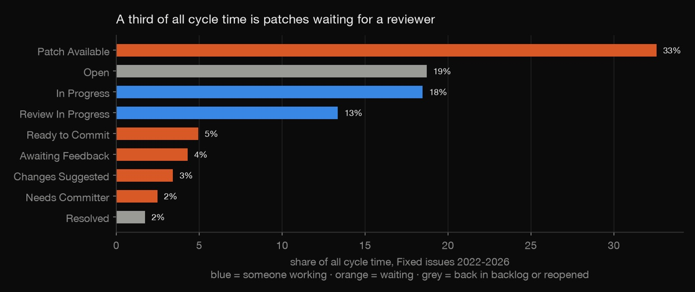
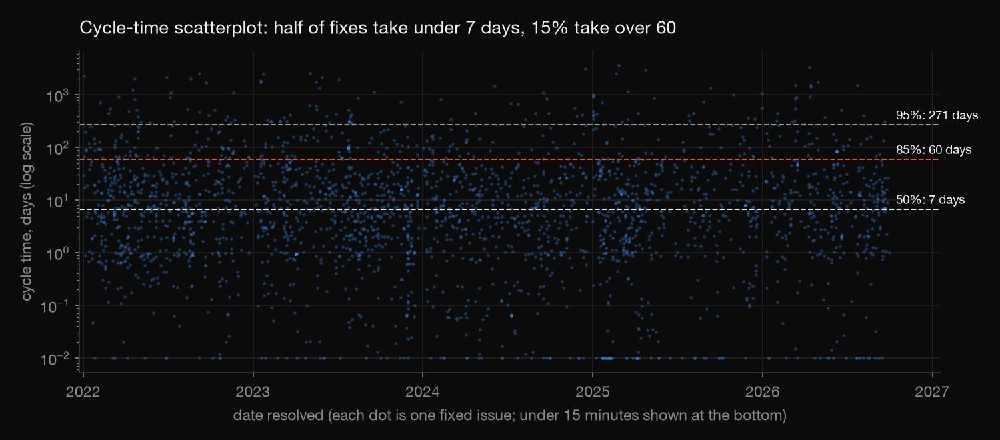
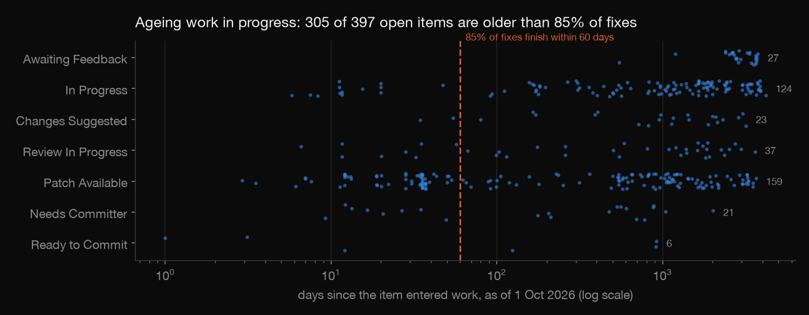
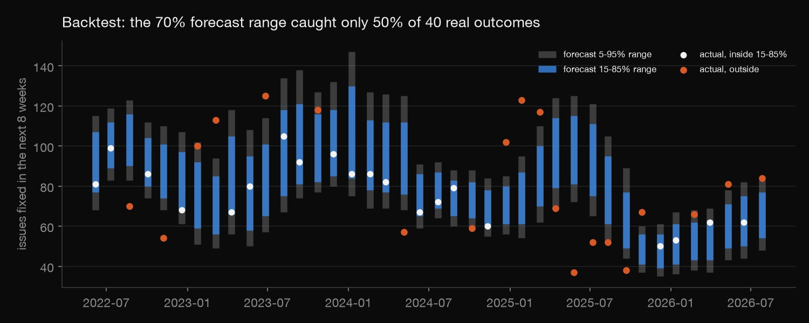
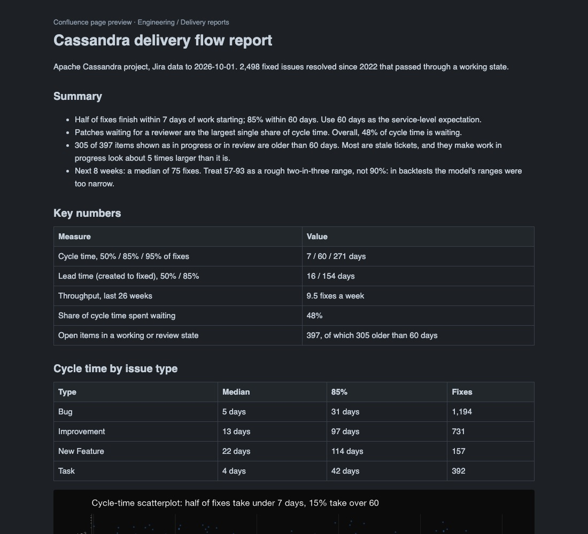

Python · Jira & Confluence · 2026-10
Jira Flow Analytics
Agile delivery metrics computed from a real team's public Jira (Apache Cassandra): cycle time, where work waits, zombie tickets caught with Little's Law, a forecast that is backtested, and a Confluence-ready report.

The report is built in Confluence's page format but not yet published to a live Confluence space; that waits for a Confluence Cloud site. Cassandra is an open-source project with volunteer reviewers, so a company team's numbers would differ.
01 — The problem
Every agile team is asked "when will it be done?" and "why is it slow?" The answers are already in Jira's status history, but most teams report gut feel or story points. What do a real team's tickets say about how long work takes, where it waits, and how far ahead delivery can honestly be forecast?
02 — What I built
Flow analytics on 7,592 issues from Apache Cassandra's public Jira, each with its full status history:
- Status timelines rebuilt from the changelog, then cycle time, lead time and time in each status.
- Throughput and ageing work in progress, cross-checked with Little's Law.
- A Monte Carlo forecast backtested from 40 past dates.
- The report as a Confluence page in storage format, with an HTML preview.
03 — How it was built
- 01
Pull the tickets, and avoid a sampling trap
Apache's Jira has a public REST API.
download.pypages through Cassandra's issues and keeps only dates, types and status changes, never titles or comments. The first version selected issues created since 2021. That silently drops long-running work created earlier and makes cycle times look shorter, so the final version selects by resolution date, or still open.JQL = ("project = CASSANDRA AND created <= 2026-09-30 AND (resolved >= 2021-01-01 OR resolution is EMPTY) " - 02
Rebuild every ticket's timeline
Each status change becomes a stretch: "Patch Available from 3 March to 9 March".
check.pyconfirms the stretches tile each issue's life exactly, with no gaps or overlaps. It found two issues marked Resolved with an empty resolution field that were being counted as open. Cycle time runs from the first move into work to resolution: half of fixes take under 7 days, 85% under 60, and 95% under 271.
rows.append((r.key, status, t, at)) - 03
Find where work waits
48% of cycle time is waiting. The biggest single status is "Patch Available" (code written, waiting for a reviewer) at 33%. Median flow efficiency is 13%. The bottleneck is review capacity, not coding.
- 04
Catch zombie tickets with Little's Law
Little's Law says average work in progress equals throughput × average cycle time. Here 273 items in progress at 1.44 fixes a day implies 189-day cycle times, against 64 measured. The gap is stale tickets: 305 of the 397 items now shown as in progress or in review are older than 60 days, and the median "In Progress" item started 3.3 years ago. Counting only items that were eventually fixed, average work in progress drops to 55. Separately, 395 issues closed as Fixed straight from triage (55 on one day) are batch closes and are left out of throughput.

worked = fx[fx["started"].notna()] # same population as cycle time: excludes batch closes straight from triage - 05
Forecast, then test the forecast
A Monte Carlo forecast resamples the last 26 weeks of throughput: a median of 75 fixes in the next 8 weeks. Backtested from 40 past dates, its 70% range caught only 50% of real outcomes and its 90% range 63%. Misses fell on both sides, so the ranges are too narrow, not biased. Longer history and 4-week blocks didn't fix it, because throughput comes in bursts. The report says so and recommends re-forecasting weekly.

sims = np.stack([past[starts + k] for k in range(block)], axis=2).reshape(n, -1)[:, :horizon].sum(axis=1) - 06
Write it up as a Confluence page
confluence.pyrenders the report in Confluence's storage format, the XHTML that the Confluence REST API takes as a page body, with the charts as attachments. It also writes an HTML preview of the same content. Every number comes from the results files.
return (f'<ac:image ac:width="900"><ri:attachment ri:filename="{item}" /></ac:image>' if storage
04 — Results
| Measure | Value |
|---|---|
| Cycle time 50/85/95% | 7 / 60 / 271 days |
| Lead time 50/85% | 16 / 154 days |
| Throughput | 9.5 a week |
| Time spent waiting | 48% |
| Stale in-progress items | 305 of 397 |
| Next 8 weeks (median) | 75 fixes |
The report's recommendations: add reviewer capacity; return tickets untouched for 90 days to the backlog; use 60 days as the service-level expectation; and re-forecast weekly, since backtests show single forecasts are overconfident.
The lesson: Jira's status history is a dataset, and the metrics built from it need the same checks as any other analysis.
05 — What I'd do next
- Publish the page to a live Confluence space through the REST API.
- Run the same analysis on a company team's Jira project.
- Forecast with a model that adapts to throughput bursts, and keep backtesting it.